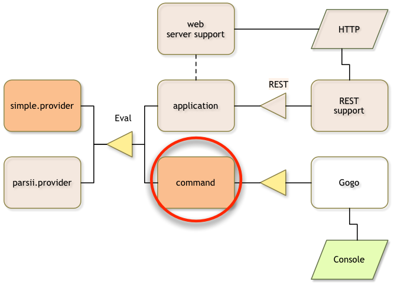

Command Project
What you will learn in this section
So far, the provider is idly sitting in the framework registering an Eval service. In this section we develop a simple Gogo command that allows us to call this service and test it from the command line.
A Gogo command is a simple service that has some magic properties. It can implement multiple commands.

Make sure you are in the top directory:
$ cd ~/workspaces/osgi.enroute.examples.eval
Creating a POM
We need to create a directory called command in the osgi.enroute.examples.eval
directory. In this directory we need to create a pom.xml file. The POM is quite standard now:
osgi.enroute.examples.eval $ mkdir command
osgi.enroute.examples.eval $ cd command
command $ vi pom.xml
// Add the pom.xml
And the content:
<project
xmlns="http://maven.apache.org/POM/4.0.0"
xmlns:xsi="http://www.w3.org/2001/XMLSchema-instance"
xsi:schemaLocation="http://maven.apache.org/POM/4.0.0 http://maven.apache.org/xsd/maven-4.0.0.xsd"
>
<modelVersion>4.0.0</modelVersion>
<parent>
<groupId>org.osgi</groupId>
<artifactId>osgi.enroute.examples.eval</artifactId>
<version>1.0.0-SNAPSHOT</version>
</parent>
<packaging>jar</packaging>
<artifactId>osgi.enroute.examples.eval.command</artifactId>
<dependencies>
<dependency>
<groupId>org.osgi</groupId>
<artifactId>osgi.enroute.examples.eval.api</artifactId>
<version>1.0.0-SNAPSHOT</version>
</dependency>
</dependencies>
</project>
We must also add command as module in the parent pom.xml, as we’ve done for the modules of the previous steps in this tutorial.
The Command
The Gogo shell is quite clever. It listens to services that have 2 ‘magic’ properties.
The osgi.command.scope service property defines a scope for the command. The
osgi.command.function contains a list of commands. These are mapped to methods
on the service object. The service property keys are defined in the Debug class
in the OSGi enRoute API.
Our implementation joins any given strings in the command line and calls the evaluator Eval service.
In Gogo, the command can just return the value as is. Gogo will automatically format that
in the best possible way. That is, don’t write commands in the main style that
return a String. The idea is that the command methods are normal methods, not
specially designed for shells. Gogo for example, tries to use the bean naming
strategy to map a name like foo to getFoo, setFoo, isFoo, etc.
The command component we’re designing is dependent on the Eval service. We
therefore use DS to add a @Reference to an instance field. This will get us
injected with the Eval service once it is available.
The following code implements a command with a scope of eval and a function
of eval.
command $ mkdir -p src/main/java/osgi/enroute/examples/eval/command
command $ vi src/main/java/osgi/enroute/examples/eval/command/EvalCommand.java
// add the Java code
And the content:
package osgi.enroute.examples.eval.command;
import java.util.stream.Collectors;
import java.util.stream.Stream;
import org.osgi.service.component.annotations.Component;
import org.osgi.service.component.annotations.Reference;
import osgi.enroute.debug.api.Debug;
import osgi.enroute.examples.eval.api.Eval;
@Component(property= {
Debug.COMMAND_SCOPE+"=eval",
Debug.COMMAND_FUNCTION+"=eval" },
service=EvalCommand.class)
public class EvalCommand {
@Reference
Eval greeter;
public double eval(String ... name) throws Exception {
return greeter.eval(Stream.of(name).collect(Collectors.joining(" ")));
}
}
The bnd.bnd File
There is no need for a bnd.bnd file because by default, all packages in the
project are placed in the bundle. Which is exactly what we want!
Building
We now install our bundle:
command $ mvn install
...
Adding the Command Bundle to the Runtime
In the bndrun project we must now add the command project to the pom so that
it becomes a dependency. We should also add the Gogo shell, since it isn’t
included in the enRoute distro.
command $ cd ../bndrun
bndrun $ vi pom.xml
// update the dependency section to add our command
The dependency section in the bndrun pom.xml file should therefore look like the following.
<dependencies>
<dependency>
<groupId>org.osgi</groupId>
<artifactId>osgi.enroute.examples.eval.simple.provider</artifactId>
<version>1.0.0-SNAPSHOT</version>
</dependency>
<dependency>
<groupId>org.osgi</groupId>
<artifactId>osgi.enroute.pom.distro</artifactId>
<version>2.0.0-SNAPSHOT</version>
</dependency>
<dependency>
<groupId>org.osgi</groupId>
<artifactId>osgi.enroute.examples.eval.command</artifactId>
<version>1.0.0-SNAPSHOT</version>
</dependency>
<dependency>
<groupId>org.apache.felix</groupId>
<artifactId>org.apache.felix.gogo.shell</artifactId>
<version>1.0.0</version>
</dependency>
</dependencies>
We also need to add the bundle to our initial requirements in the bndrun file
in the osgi.enroute.examples.eval/bndrun directory:
bndrun $ vi osgi.enroute.examples.eval.bndrun
// replace the -runrequires
-runrequires: \
osgi.identity;filter:='(osgi.identity=osgi.enroute.examples.eval.simple.provider)',\
osgi.identity;filter:='(osgi.identity=org.apache.felix.gogo.shell)',\
osgi.identity;filter:='(osgi.identity=org.apache.felix.gogo.command)',\
osgi.identity;filter:='(osgi.identity=osgi.enroute.examples.eval.command)'
And then we run the command to resolve:
bndrun $ mvn install
...
-runbundles: \
org.apache.felix.configadmin; version='[1.8.8,1.8.9)',\
org.apache.felix.gogo.command; version='[0.16.0,0.16.1)',\
org.apache.felix.gogo.runtime; version='[1.0.0,1.0.1)',\
org.apache.felix.gogo.runtime; version='[0.16.2,0.16.3)',\
org.apache.felix.gogo.shell; version='[1.0.0,1.0.1)',\
org.apache.felix.log; version='[1.0.1,1.0.2)',\
org.apache.felix.scr; version='[2.0.2,2.0.3)',\
org.eclipse.equinox.metatype; version='[1.4.100,1.4.101)',\
org.osgi.service.metatype; version='[1.3.0,1.3.1)',\
osgi.enroute.examples.eval.command; version='[1.0.0,1.0.1)',\
osgi.enroute.examples.eval.parsii.provider; version='[1.0.0,1.0.1)'
[INFO] ------------------------------------------------------------------------
[INFO] BUILD FAILURE
...
[INFO] ------------------------------------------------------------------------
bndrun $ vi osgi.enroute.examples.eval.bndrun
// replace the -runbundles with the given list
And then replace the -runbundles in the osgi.enroute.examples.eval.bndrun
file to the list provided by maven. Then we should run maven again to get our
JAR.
bndrun $ mvn install
...
[INFO] ------------------------------------------------------------------------
[INFO] BUILD SUCCESS
...
[INFO] ------------------------------------------------------------------------
bndrun $ java -jar osgi.enroute.examples.eval.jar
____ _
___ _ __ | _ \ ___ _ _| |_ ___
/ _ \ '_ \| |_) / _ \| | | | __/ _ \
| __/ | | | _ < (_) | |_| | |_ __/
\___|_| |_|_| \_\___/ \__,_|\__\___|
http://enroute.osgi.org/
G! eval 3 + 4
7.0
G!
Yeah!
What Have We Learned?
In this section we learned how to create a Gogo command. We created a bundle that registered a service that was picked up by the Gogo shell. We then used this command to test our bundle.